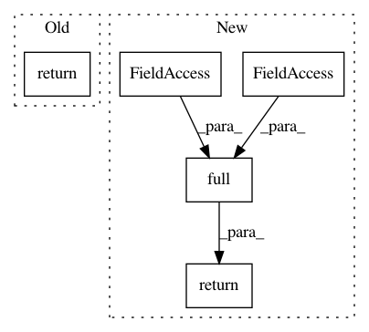

e2041ce3540a08dcdc70eaef86b13ca84b31ebd5,torch/distributions/half_cauchy.py,HalfCauchy,mean,#HalfCauchy#,45
Before Change
@property
def mean(self):
return self.base_dist.mean
@property
def variance(self):
return self.base_dist.variance
After Change
@property
def mean(self):
return torch.full(self._extended_shape(), math.inf, dtype=self.scale.dtype, device=self.scale.device)
@property
def variance(self):
return self.base_dist.variance
In pattern: SUPERPATTERN
Frequency: 3
Non-data size: 5
Instances
Project Name: pytorch/pytorch
Commit Name: e2041ce3540a08dcdc70eaef86b13ca84b31ebd5
Time: 2021-01-26
Author: neerajprad@devvm903.atn0.facebook.com
File Name: torch/distributions/half_cauchy.py
Class Name: HalfCauchy
Method Name: mean
Project Name: jonathf/chaospy
Commit Name: 272f235fd8418eae67631d62051084eb363f781b
Time: 2020-11-05
Author: jonathf@users.noreply.github.com
File Name: chaospy/descriptives/skewness.py
Class Name:
Method Name: Skew
Project Name: jonathf/chaospy
Commit Name: 272f235fd8418eae67631d62051084eb363f781b
Time: 2020-11-05
Author: jonathf@users.noreply.github.com
File Name: chaospy/descriptives/kurtosis.py
Class Name:
Method Name: Kurt